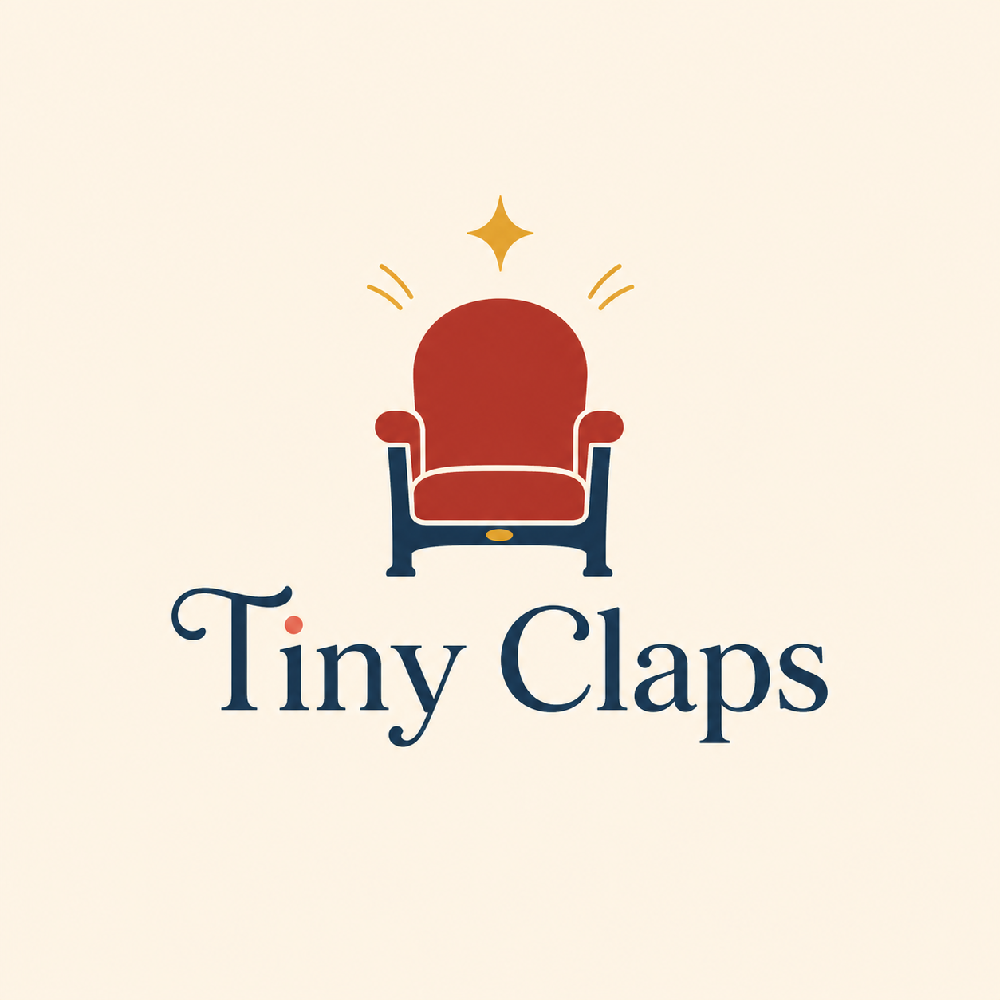

Filtra y compara opciones adecuadas
Busca por edad, precio, localización, horario y duración, y compara fichas claras con tipo de espectáculo, nivel de estímulo y detalles útiles para familias.

Primeras funciones, grandes recuerdos
Tiny Claps ayuda a las familias con niños de 0 a 6 años a filtrar obras adecuadas, preparar la experiencia según la edad y seguir conversando después de la función.
El problema
La información básica suele estar dispersa y, aunque aparezca una edad recomendada, muchas familias siguen sin saber si la obra encajará con la atención, sensibilidad e intereses de su hijo. La decisión mezcla logística, confianza y ganas de que la primera experiencia deje una huella bonita.
Cómo funciona
Busca por edad, precio, localización, horario y duración, y compara fichas claras con tipo de espectáculo, nivel de estímulo y detalles útiles para familias.
Una pequeña guía adaptada a la edad para explicar qué va a pasar, despertar curiosidad y llegar al teatro con más tranquilidad.
Preguntas, juegos e ideas para retomar la obra en casa sin convertirla en deberes.
Para quién
Para madres y padres con niños de 0 a 6 años que quieren acercarles al teatro, pero necesitan decidir más rápido, con información más clara y con recursos para acompañar la experiencia antes y después.
“No busco solo una entrada. Quiero saber si esta obra es para mi hijo y cómo puedo ayudarle a disfrutarla.”
Acceso anticipado
Deja tus datos y ayúdame a validar si esta idea conecta con otras familias. También recibirás las primeras guías de prueba cuando estén listas.